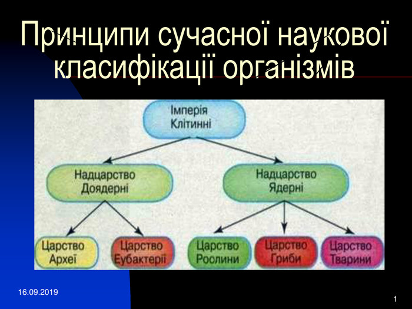

Принципи наукової класифікації організмів
Одним з головних принципів сучасної систематики є виявлення родинних зв’язків між різними групами організмів, як тих, що існують тепер, так і тих, що колись вимерли.
Саме на цьому ґрунтується виділення систематичних груп надвидового рангу: родів, родин і т. д.
Біологічна класифікація - упорядковування різноманітних існуючих і вимерлих видів організмів , їх розподіл, на певні систематичні групи (таксони) та опрацювання природної системи
органічного світу. Основним з головних принципів сучасної систематики є виявлення родинних звязків
між різними групами організмів ,як тих,що існують тепер, так і тих,що колись вимерли. Основні систематичні категорії – це вид, рід, родина, ряд, клас, тип, царство.Важливим етапом
у розвитку систематики було створення філогенетичного напряму, який започаткував Е. Геккель. Цей учений вважав, що для класифікації організмів
важливо враховувати не стільки їхню зовнішню подібність, скільки родинні зв’язки — ступінь спорідненості.

Дивергенція — еволюційний процес розходження ознак у нащадків спільного предка. Цей процес пояснює, чому протягом розвитку життя на нашій планеті,
незважаючи на постійне вимирання певної кількості видів, загальне видове різноманіття не тільки не скорочувалося, а й поступово зростало. Припустимо, що колись
існував предковий вид А, який охоплював широкий ареал. Умови існування в різних його частинах могли змінюватись. Щоб вижити в нових умовах, популяції цього виду мали до
них пристосовуватись. Через певний час генофонд таких популяцій міг змінитися настільки, що їхні представники втрачали здатність схрещуватись між собою.
Так відбуваються процеси видоутворення — виникнення нових видів.
Сучасні системи організмів називають природними, або філогенетичними. Філогенетична систематика базується на таких принципах:
• усі сучасні види є нащадками викопних форм, чим забезпечується безперервність життя;
• викопні види є або сліпими гілками еволюції (тобто такими, які не дали початок дочірнім), або предками сучасних видів;
• видоутворення відбувається переважно шляхом дивергенції, тому кожна природна систематична група є монофілетичною і має включати всіх нащадків спільного предка, як тих, що існують нині, так і вимерлих;
• кожний тип тварин (відділ рослин) має притаманний лише йому загальний план будови, який докорінно відрізняється від інших завдяки унікальним ознакам, які називають діагностичними; завдання: пригадайте ознаки представників відділу Покритонасінні (Квіткові), які відрізняють їх від інших відділів вищих рослин;
• різноманіття видів є наслідком їхніх адаптацій до певних умов довкілля (явище адаптивної радіації);
• певні таксони включають як одноклітинні види, так і багатоклітинні, якщо ці види є спорідненими (наприклад, відділи Зелені та Червоні водорості);
• загальною метою сучасної систематики є створення єдиної всеосяжної системи організмів, яка відбивала б хід еволюції.
Багато уваги в систематиці приділяють також вивченню мітохондрій і хлоропластів. Згідно з теорією симбіогенезу, яку в остаточному вигляді сформулювала американська біологиня Л. Маргуліс,
мітохондрії та хлоропласти є нащадками клітин прокаріотів: мітохондрії — аеробних гетеротрофних бактерій, хлоропласти — ціанобактерій.
Проникнувши у предкову клітину еукаріотів, такі прокаріоти втратили власну самостійність, але зберегли певний ступінь автономії.
Вивчення спадкового матеріалу цих органел також дає інформацію про ступінь спорідненості певних груп організмів.